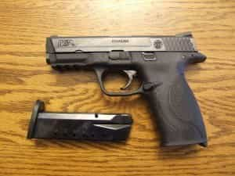

< < < Back
How To Use A Revolver For Self-Defense – Return Of Kings
Until fairly recently, revolvers were generally the preferred self-defense handguns due to their rock-solid reliability. Recent improvements in the reliability of semi-automatics have given them the edge. They generally have a greater magazine capacity, and reload more quickly and easily under stress.
But there are situations where the revolver still has an edge, and many of you may already own a revolver, and may want some ideas on using them for defense. This article examines some of the advantages and disadvantages of revolvers, as well as practical advice on how to employ them for self-defense.
Advantages Of Revolvers
There are many reasons to pick a revolver for defense. They are simple to operate; point at bad guy, pull the trigger, it goes BANG. This makes them a good choice for novice shooters who don’t have time to train with a semi-automatic. This also makes them excellent backup-carry guns if you might need to arm another person. Revolvers are extremely reliable, still a bit better than the best semi-automatics, although no gun is 100%.
A major advantage to revolvers for concealed carry is the ability to fire from concealment. Because they don’t have a slide moving back and forth, concealed revolvers can be fired from within a pocket or coat, without having to be drawn first. A mugging victim could pretend to reach for a wallet in the pocket that has their revolver.
The biggest advantage to a revolver is the ability to use powerful cartridges. .357 magnum is a significant step-up in power from any of the common auto cartridges (9mm, .40, or .45). If you can handle .44 magnum, it is a real death ray, and stands head-and-shoulders above any cartridge commonly used by a semi-automatic. You can even go up to a hand cannon like .454 casull or .50 S&W if you need to make up for a small penis!
Long-barrel revolvers (6-inches+), can be a good choice for several purposes, although they are generally too big for concealed carry. The longer barrel increases the muzzle velocity, especially with magnum cartridges, where the velocity increases 20-40% compared to a 2-inch barrel. For this reason, long-barrel revolvers are generally considered the best choice for animal defense; grizzly bears will laugh at a 9mm, but a .44 magnum from a long barrel revolver might save you. They are also useful for hunting small and medium-size game at close ranges. And they are a good choice for home defense due to their decided advantage in one-shot stopping power.
Disadvantages Of Revolvers

Semi Autos Have The Edge on Capacity and Speed Reloads
A full-size revolver generally holds 5-7 rounds, while a full-size semi-automatic generally holds 11-17. Revolvers are somewhat slower to reload, but reloading reliably under stress is a much bigger concern. With practice, revolver reloads can be done quickly, but the the stress of using fine motor skills in a gunfight is, I believe, the biggest downside to using one for defense. Reloading a semi-automatic is easier, and easy is good when your heart rate is through the roof, you have tunnel vision, and someone is trying to kill you.
While military and law enforcement may need to be able to throw a lot of ammo in a short time for suppression, the limited capacity and difficulty of reloading are not fatal to the revolver for defensive purposes. Most defensive gun fights happen at close range, and are ended within a few shots. If the fight is not ended within a few shots, you can generally run away or get to cover to reload. In 90% of defensive gunfights, a snub nose revolver with 5 shots will work just as well as a full-size Glock with 4 spare magazines.
That said, you should still have a good method of reloading your revolver if you need to. So, what are the best ways to reload a revolver in a hurry?
Speed Loaders
A speed loader holds a full reload of ammo in a plastic or rubber shell shaped to match up to the cylinder of your revolver. To reload, open the cylinder, extract the shells, put the new rounds into the cylinder, release them, close the cylinder, and get back in the fight. Here is a video of police trainer and expert competitive shooter Massad Ayoob demonstrating his preferred method of reloading a revolver with a speed loader.
If you are going to carry a revolver, or use it for home defense, I would recommend at least 2-3 speed loaders, kept fully loaded. It is very important to get the loader that matches up exactly with your gun, because it must be custom-fitted to the cylinder or it will not function.
Speed Strips
Speed strips are a rubber strip with holes to hold ammunition. They are generally designed to reload two shots at a time. Simply insert the rounds into the cylinder, and peel the speed strip to the side so the rounds will drop into the cylinder. Here is Massad Ayoob again, demonstrating his preferred method of reloading with speed strips.
Fun Fact: If any of you also own an SKS or AK-47 rifle, you can also use your stripper clips to reload a revolver! .38 special and .357 magnum, by pure coincidence, will fit perfectly into 7.62×39 stripper clips. Here is a video showing how to do it. I actually prefer these metal stripper clips due to their rigidity, and find it nearly impossibly to fumble cartridges when using them.
Speed strips are preferred by some for a concealed carry revolver, because they are flatter than a speed loader, and easier to conceal. I prefer speed loaders, due to their quicker reload time. However, speed strips can be easier to use under stress without extensive practice (they’re less likely to spill your cartridges everywhere), so they may be a good choice for those without the time to practice using a speed loader.
Conclusion
While semi-automatics are generally preferable, revolvers remain a viable defensive tool. Revolvers are reliable, easy to operate, can be fired from concealment, and fire powerful cartridges, making them the go-to choice for dangerous animal defense. Their Achilles heel is reloading, so plan to either fire a few shots while running away, or spend some time learning to reload under stress. And remember the most important rule of gun fights: HAVE A GUN!
Read More: Why Patriarchy Is The Greatest Social System Ever Created